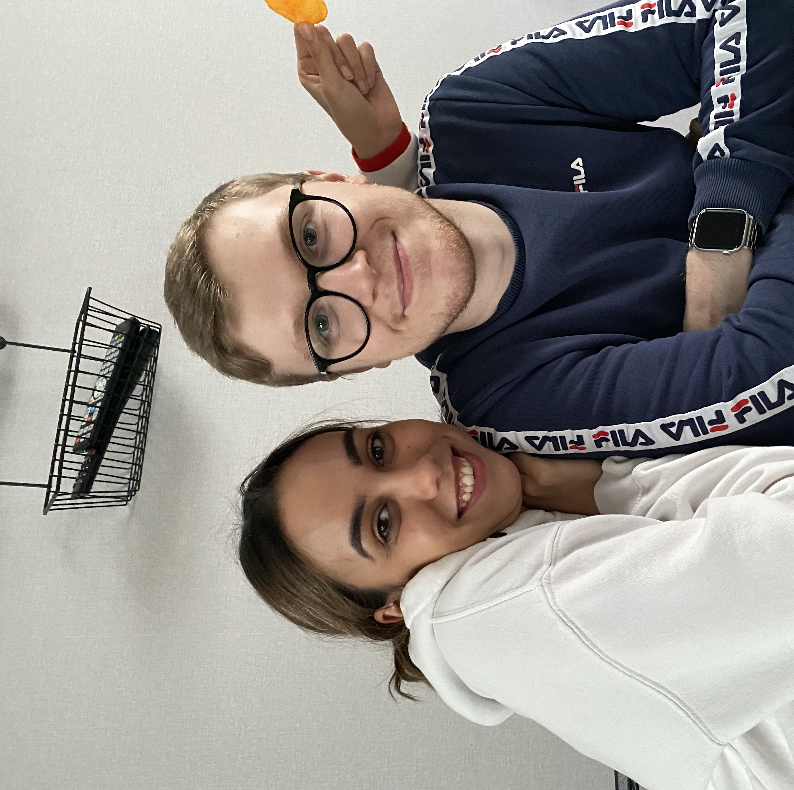

About Me

Hello!
My name is Jari Balcaen,
I am 22 years old and live together with my wife in the lovely city of Heule. We have a kitten named 'Elodie'.
I always loved being busy on a computer so i thought let's give programming a try. Right now, i'm trying to make my own portfolio so i can show it to my clients later.
My education:
I started studying at the Sint-Jan Berchmanscollege in Avelgem. I learned everything i needed to know about businesses, after that i started at GuldenSporenCollege Kaai in Kortrijk. There I studied informatics. After almost one year I stopped and studied Sales. I graduated in 2019!
My first job:
In 2019 I started my first job at Media Markt in sales, I started as a cassier. After 2 months i changed to the real deal. I started selling washing machine, fridges etc... I did a good job, and got asked if I wanted to go for a bigger challenge. The challenge was selling pc's and phones and every accesory that you can imagine. I liked that more because of my past with informatics. I also did a quite good job so i got promoted to do provider services. So I did Proximus, Orange and Scarlet.
My new job:
After almost 4 years working in Media Markt it was time for a new challenge, I am going to be a HR Recruiter on 7 Novembre for Ago Jobs HR. In the last year i was studying HTML and CSS because i wanted to make sites likes this and maybe in the future for clients. That's why my department in Ago is only for IT'ers. I am really excited and hope that it will be fun!